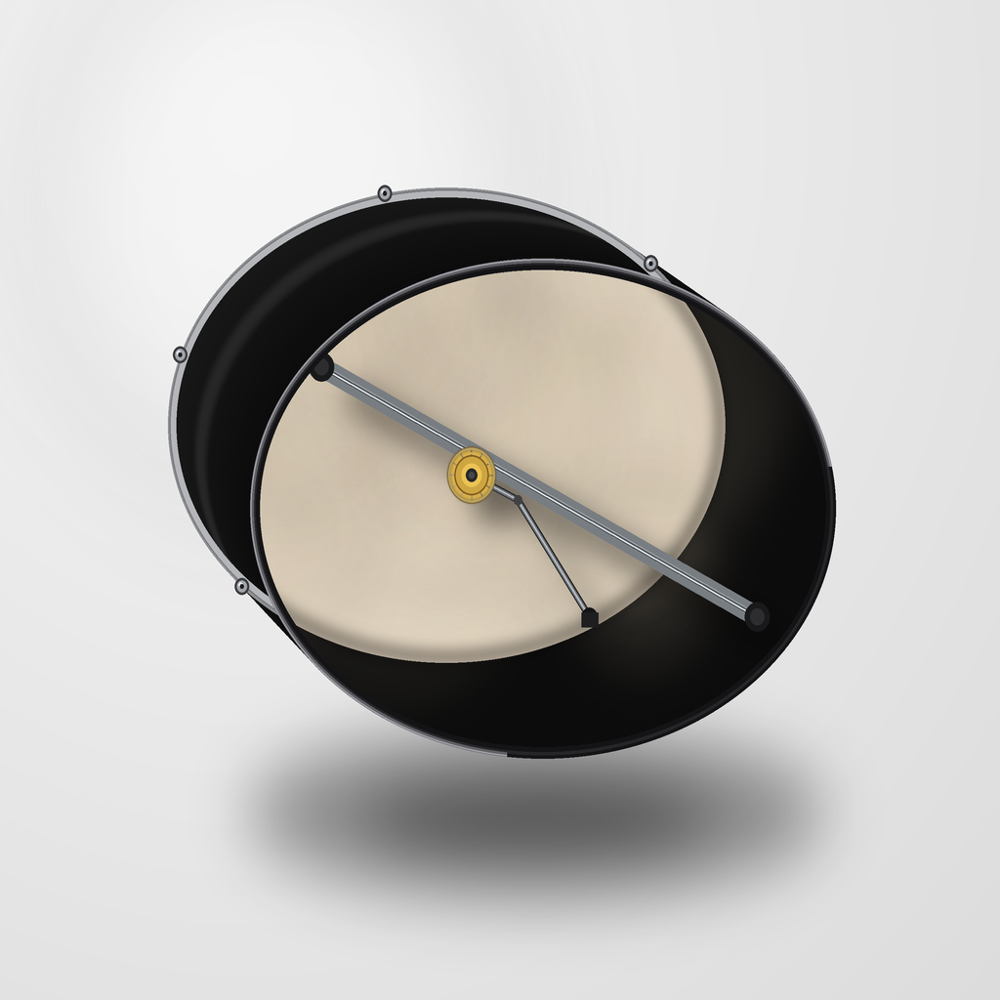
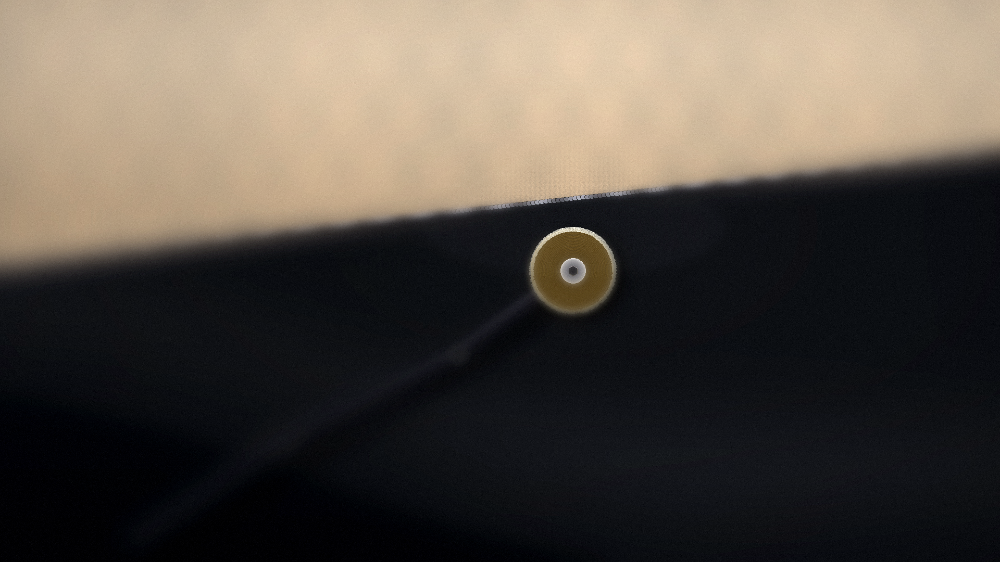
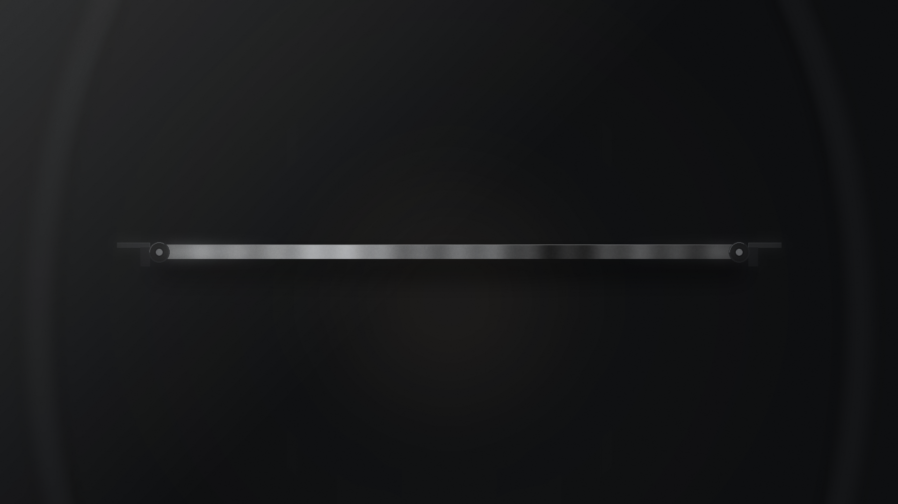
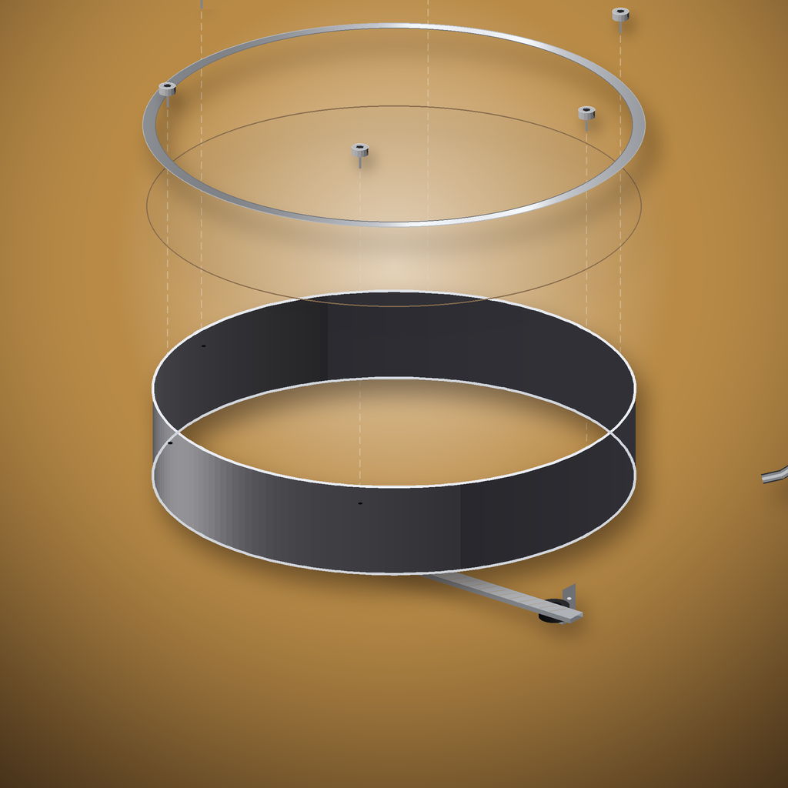

Round 5 Percussion · Lane 05 · v0.1.0-blueprint Bowed Frame Drum
Design thesis: A bodhran-scale frame drum with a rolled 1.0 mm cold-rolled steel cylinder frame instead of traditional laminated wood. Inside the frame, a flat CR-steel tone bar (400 × 25 × 1 mm) on neoprene grommets vibrates sympathetically when the head is struck, adding an overtone shimmer near C4. An optional rosined brass wheel on a cantilevered arm produces sustained bowed drone from 80–400 Hz, transforming this percussion instrument into a hybrid membranophone/bowed instrument.
EngineeringParameters
All dimensions driving fabrication and acoustic models. Source: parameters.csv
| Name | Value | Unit | Source | Confidence |
|---|
ProcurementBill of Materials
Source: bom.csv · ~$107 USD total estimated build cost
| Part | Qty | Material | Supplier | Cost USD | Lead (days) | Notes |
|---|
QualityValidation
Predicted values from Wolfram acoustic model. Measured column populated after physical build. Source: validation.csv
| Metric | Predicted | Measured | Units | Pass/Fail | Tolerance | Notes |
|---|
AcousticsWolfram Starter Model
First-order acoustic model covering circular membrane Bessel modes, tone bar Euler-Bernoulli bending modes, sympathetic coupling check, and rosined wheel excitation bandwidth. Source: bowed-frame-drum-starter.wl
Model Overview
Loading bowed-frame-drum-starter.wl…
BuildFabrication Plan
7-stage, 38-step sequence using Maker Nexus tooling. Source: fabrication-plan.md
CADFlat Patterns & Bend Table
DXF layer scheme: CUT (red), BENDS (yellow), ETCH (cyan), HOLES (magenta). Units: mm.
Part Summary
| Part | Blank L (mm) | Blank W (mm) | Process |
|---|---|---|---|
| Frame ring | 1414.7 | 90.0 | Slip-roll → TIG seam |
| Rim strip (×2) | 1414.7 | 12.0 | Slip-roll → TIG to frame edges |
| Tone bar | 400.0 | 25.0 | Laser cut flat (no forming) |
| Mount bracket (×2) | 30.0 | 25.0 | Laser cut + 90° brake bend |
| Wheel arm | 80.0 | 15.0 | Laser cut + 2× 45° brake bends |
Bend Table
| Feature | Part | Angle | Inside R (mm) | K-factor | Thickness (mm) | BA (mm) | Seq |
|---|---|---|---|---|---|---|---|
| B01 | Mount bracket | 90° | 1.5 | 0.44 | 1.0 | 3.21 | 1 |
| B02 | Wheel arm bend 1 | 45° | 1.5 | 0.44 | 1.0 | 1.60 | 1 |
| B03 | Wheel arm bend 2 | 45° | 1.5 | 0.44 | 1.0 | 1.60 | 2 |
AcousticsTuning Notes
Head Tuning Formula
f₀₁ = (2.4048 / (2π r)) × √(T / σ) r = 0.215 m (head radius) σ = 0.35 kg/m² (goatskin) or 0.25 (synthetic Skyndeep) T = surface tension N/m (set by screw tension) Target: f₀₁ = 130.8 Hz (C3)
Screw-to-Pitch Quick Reference
| Turns (star pattern) | ΔT (N/m est.) | Δf₀₁ (Hz est.) |
|---|---|---|
| ¼ turn | +12 | +4–8 |
| ½ turn | +24 | +8–15 |
| 1 full turn | +48 | +15–30 |
Tone Bar Trim Table
| Trim each end | Bar length (mm) | f_bar1 (Hz, approx) | Note |
|---|---|---|---|
| 0 mm | 400 | 257 | C4 − 27¢ |
| 5 mm | 390 | 270 | C#4 − 4¢ |
| 10 mm | 380 | 285 | C#4 + 94¢ ≈ D4 |
| 20 mm | 360 | 318 | Eb4 |
EngineeringRisks
Manufacturing Risks
| Risk | Likelihood | Impact | Mitigation |
|---|---|---|---|
| Spring-back → out-of-round frame | Medium | High | Mandatory coupon test before full blank |
| TIG seam distortion | Medium | Medium | V-block jig; short passes; cool between |
| Rim strip weld high spot | Low | High | Grind + straightedge check |
| Wheel arm angle miss | Medium | Medium | Cardboard prototype first |
Acoustic Risks
| Risk | Likelihood | Mitigation |
|---|---|---|
| Tone bar coupling inaudible (17% delta) | Medium | Shorten bar 20 mm → 318 Hz closer to A3 overtone |
| Rosined wheel: squeak only, no drone | Medium | More rosin; lighter pressure; slower bow |
| Head fundamental unreachable | Low | Switch to lighter synthetic head (σ ≈ 0.25 kg/m²) |
| Sympathetic bar rattle | Low | Add thin foam strip between bar and grommet |
DocumentationImages
20 shots required for capstone deck. Placeholders shown below. See photo-shotlist.md for full list.




Interactive Wolfram Model
Live parametric explorer (empirical estimates — not fabrication authority).